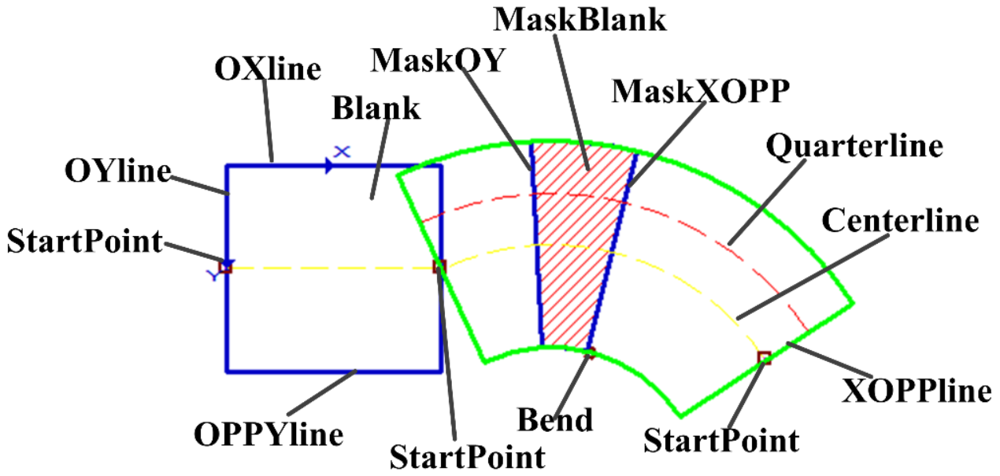

Biểu diễn lớp điều khiển Gui của thước cặp polyline biến đổi, tức là đồ họa hiển thị trực quan trong vùng nhìn. Bên trong nó bao gồm một kiểu dữ liệu đồ họa cơ sở là scTrendlineExCaliper. Lớp điều khiển Gui chỉ đóng vai trò bao bọc (wrapper) cho kiểu scTrendlineExCaliper nhằm thuận tiện cho việc hiển thị trên hình ảnh. Ví dụ như vùng kiểm tra của công cụ phát hiện độ rộng biên cong, hoặc vùng tìm kiếm của công cụ tìm hình eo. Như hình minh họa, mỗi hình chữ nhật nhỏ (hoặc hình quạt) đều là một hình chữ nhật biến đổi; các hình chữ nhật (hình quạt) nhỏ này hợp lại thành một thước cặp polyline biến đổi. Mỗi hình chữ nhật nhỏ (hình quạt) là một phân đoạn của thước cặp polyline biến đổi.
Nếu cần lấy các tham số liên quan đến đồ họa, thông thường trước tiên cần gọi GetTrendlineExCaliper() để lấy được kiểu đồ họa cơ sở scTrendlineExCaliper được chứa trong đối tượng Gui này.

| Phân loại | Tên giao diện | Mô tả giao diện |
|---|---|---|
| Khởi tạo | scGuiTrendlineEx | Hàm khởi tạo mặc định scGuiTrendlineEx(). |
| Hàm | GetTrendlineExCaliper | Lấy thước cặp polyline biến đổi. |
| SetTrendlineExCaliper | Thiết lập thước cặp polyline biến đổi. | |
| GetPolyline | Lấy vùng polyline biến đổi (đa giác). | |
| SetPolyline | Thiết lập vùng polyline biến đổi (đa giác). | |
| GetYlength | Lấy chiều cao polyline biến đổi của phân đoạn chỉ định (độ dài cạnh OY). | |
| SetYlength | Thiết lập chiều cao polyline biến đổi của phân đoạn chỉ định (độ dài cạnh OY). | |
| GetIsCaliperParamApplyToAll | Lấy trạng thái tham số thước cặp có áp dụng cho toàn bộ polyline biến đổi hay không. | |
| IsCaliperParamApplyToAll | Thiết lập việc tham số thước cặp có áp dụng cho toàn bộ polyline biến đổi hay không. | |
| GetCaliperWidth | Lấy độ rộng thước cặp của phân đoạn chỉ định. | |
| SetCaliperWidth | Thiết lập độ rộng thước cặp của phân đoạn chỉ định. | |
| GetCaliperSpace | Lấy khoảng cách thước cặp của phân đoạn chỉ định. | |
| SetCaliperSpace | Thiết lập khoảng cách thước cặp của phân đoạn chỉ định. | |
| GetCaliperID | Lấy ID thước cặp được chọn trong phân đoạn chỉ định, tức thước cặp hiển thị màu xanh lá trên hình ảnh. | |
| SetCaliperID | Thiết lập ID thước cặp của phân đoạn chỉ định, tức ID thước cặp sẽ hiển thị màu xanh lá trên hình ảnh. | |
| GetSearchDirection | Lấy hướng tìm kiếm của thước cặp trong phân đoạn chỉ định. | |
| SetSearchDirection | Thiết lập hướng tìm kiếm của thước cặp trong phân đoạn chỉ định. | |
| GetBendAngle | Lấy góc uốn của phân đoạn polyline biến đổi chỉ định. | |
| SetBendAngle | Thiết lập góc uốn của phân đoạn polyline biến đổi chỉ định. | |
| GetCaliperNum | Lấy số lượng thước cặp của phân đoạn chỉ định. |
Chức năng: Khởi tạo đối tượng scGuiTrendlineEx.
Tham số: Không.
Giá trị trả về: Không.
Chức năng: Lấy thước cặp polyline biến đổi.
Tham số: Không.
Giá trị trả về: Thước cặp polyline biến đổi, kiểu scTrendlineExCaliper.
Chức năng: Thiết lập thước cặp polyline biến đổi.
Tham số:
Giá trị trả về: Kiểu bool, biểu thị việc thiết lập có thành công hay không.
Chức năng: Lấy vùng polyline biến đổi (đa giác).
Tham số: Không.
Giá trị trả về: Vùng polyline biến đổi (đa giác), kiểu scPolyline.
Chức năng: Thiết lập vùng polyline biến đổi (đa giác).
Tham số:
Giá trị trả về: Kiểu bool, biểu thị việc thiết lập có thành công hay không.
Chức năng: Lấy chiều cao polyline của phân đoạn chỉ định (độ dài cạnh OY).
Tham số:
rectExID: ID của phân đoạn chỉ định, tham số đầu vào, kiểu số nguyên.
ylength: Chiều cao polyline của phân đoạn chỉ định (độ dài cạnh OY), tham số đầu ra, kiểu số thực. Cần tạo trước một biến số thực và truyền vào làm tham số thứ hai của hàm.
Giá trị trả về: Kiểu bool, biểu thị việc lấy dữ liệu có thành công hay không.
Chức năng: Thiết lập chiều cao polyline của phân đoạn chỉ định (độ dài cạnh OY).
Tham số:
rectExID: ID của phân đoạn chỉ định, tham số đầu vào, kiểu số nguyên.
length: Chiều cao polyline của phân đoạn chỉ định (độ dài cạnh OY), tham số đầu vào, kiểu số thực.
Giá trị trả về: Kiểu bool, biểu thị việc thiết lập có thành công hay không.
Chức năng: Lấy trạng thái tham số thước cặp có áp dụng cho toàn bộ polyline biến đổi hay không.
Tham số: Không.
Giá trị trả về: Trạng thái tham số thước cặp có áp dụng cho toàn bộ polyline biến đổi hay không, kiểu bool.
Chức năng: Thiết lập việc tham số thước cặp có áp dụng cho toàn bộ polyline biến đổi hay không.
Tham số:
Giá trị trả về: Kiểu bool, biểu thị việc thiết lập có thành công hay không.
Chức năng: Lấy độ rộng thước cặp của phân đoạn chỉ định.
Tham số:
rectExID: ID của phân đoạn chỉ định, tham số đầu vào, kiểu số nguyên.
width: Độ rộng thước cặp của phân đoạn chỉ định, tham số đầu ra, kiểu số nguyên. Cần tạo trước một biến số nguyên và truyền vào làm tham số thứ hai của hàm.
Giá trị trả về: Kiểu bool, biểu thị việc lấy dữ liệu có thành công hay không.
Chức năng: Thiết lập độ rộng thước cặp của phân đoạn chỉ định.
Tham số:
rectExID: ID của phân đoạn chỉ định, tham số đầu vào, kiểu số nguyên.
width: Độ rộng thước cặp của phân đoạn chỉ định, tham số đầu vào, kiểu số nguyên.
Giá trị trả về: Kiểu bool, biểu thị việc thiết lập có thành công hay không.
Chức năng: Lấy khoảng cách thước cặp của phân đoạn chỉ định.
Tham số:
rectExID: ID của phân đoạn chỉ định, tham số đầu vào, kiểu số nguyên.
space: Khoảng cách thước cặp của phân đoạn chỉ định, tham số đầu ra, kiểu số nguyên. Cần tạo trước một biến số nguyên và truyền vào làm tham số thứ hai của hàm.
Giá trị trả về: Kiểu bool, biểu thị việc lấy dữ liệu có thành công hay không.
Chức năng: Thiết lập khoảng cách thước cặp của phân đoạn chỉ định.
Tham số:
rectExID: ID của phân đoạn chỉ định, tham số đầu vào, kiểu số nguyên.
space: Khoảng cách thước cặp của phân đoạn chỉ định, tham số đầu vào, kiểu số nguyên.
Giá trị trả về: Kiểu bool, biểu thị việc thiết lập có thành công hay không.
Chức năng: Lấy ID thước cặp của phân đoạn rectExID trong polyline biến đổi. ID thước cặp là thước cặp đang được chọn, tức thước cặp hiển thị màu xanh lá trên hình ảnh. Mặc định không có thước cặp nào được chọn, ID thước cặp lấy được là -1. Hàm này thông thường không dùng cho mục đích bên ngoài.
Tham số:
rectExID: ID của phân đoạn chỉ định, tham số đầu vào, kiểu số nguyên.
caliperID: ID thước cặp của phân đoạn chỉ định, tham số đầu ra, kiểu số nguyên. Cần tạo trước một biến số nguyên và truyền vào làm tham số thứ hai của hàm.
Giá trị trả về: Kiểu bool, biểu thị việc lấy dữ liệu có thành công hay không.
Chức năng: Thiết lập ID thước cặp của phân đoạn rectExID trong polyline biến đổi, tức là thiết lập ID của thước cặp được chọn. Thước cặp được thiết lập sẽ hiển thị màu xanh lá. Hàm này thông thường không dùng cho mục đích bên ngoài.
Tham số:
rectExID: ID của phân đoạn chỉ định, tham số đầu vào, kiểu số nguyên.
caliperID: ID thước cặp của phân đoạn chỉ định, tham số đầu vào, kiểu số nguyên.
Giá trị trả về: Kiểu bool, biểu thị việc thiết lập có thành công hay không.
Chức năng: Lấy hướng tìm kiếm thước cặp của phân đoạn rectExID trong polyline biến đổi.
Tham số:
rectExID: ID của phân đoạn chỉ định, tham số đầu vào, kiểu số nguyên.
searchdirection: Hướng tìm kiếm thước cặp của phân đoạn chỉ định, tham số đầu ra, kiểu số nguyên. Cần tạo trước một biến số nguyên và truyền vào làm tham số thứ hai của hàm.
Giá trị trả về: Kiểu bool, biểu thị việc lấy dữ liệu có thành công hay không.
Chức năng: Thiết lập hướng tìm kiếm thước cặp của phân đoạn rectExID trong polyline biến đổi.
Tham số:
rectExID: ID của phân đoạn chỉ định, tham số đầu vào, kiểu số nguyên.
searchdirection: Hướng tìm kiếm thước cặp của phân đoạn chỉ định, tham số đầu vào, kiểu số nguyên.
Giá trị trả về: Kiểu bool, biểu thị việc thiết lập có thành công hay không.
Chức năng: Lấy góc uốn của phân đoạn rectExID trong polyline biến đổi.
Tham số:
rectExID: ID của phân đoạn chỉ định, tham số đầu vào, kiểu số nguyên.
bendangle: Góc uốn của phân đoạn chỉ định, tham số đầu ra, kiểu số thực. Cần tạo trước một biến số thực và truyền vào làm tham số thứ hai của hàm.
Giá trị trả về: Kiểu bool, biểu thị việc lấy dữ liệu có thành công hay không.
Chức năng: Thiết lập góc uốn của phân đoạn rectExID trong polyline biến đổi.
Tham số:
rectExID: ID của phân đoạn chỉ định, tham số đầu vào, kiểu số nguyên.
bendangle: Góc uốn của phân đoạn chỉ định, tham số đầu vào, kiểu số thực.
Giá trị trả về: Kiểu bool, biểu thị việc thiết lập có thành công hay không.
Chức năng: Lấy số lượng thước cặp của phân đoạn chỉ định.
Tham số:
rectExID: ID của phân đoạn chỉ định, tham số đầu vào, kiểu số nguyên.
calipernum: Số lượng thước cặp của phân đoạn chỉ định, tham số đầu ra, kiểu số nguyên. Cần tạo trước một biến số nguyên và truyền vào làm tham số thứ hai của hàm.
Giá trị trả về: Số lượng thước cặp của phân đoạn chỉ định, kiểu số nguyên.
无
```python
ROI_Line1 = GvTool.GetToolData(“曲线边宽检测工具_015.检测区域”) caliper = ROI_Line1.GetTrendlineExCaliper() #获取曲线边宽检测区域Gui控件中的可变卡尺折线
subrectexnum = caliper.GetSubRectNum() for i in range(subrectexnum): subrectex = caliper.GetSubRectEx(i) po = subrectex.GetOriginPoint() Px = subrectex.GetCornerPx() Py = subrectex.GetCornerPy() Popp = subrectex.GetCornerPopp() print(“——–%d———” %i) print(po.GetX(),po.GetY()) print(Px.GetX(),Px.GetY()) print(Py.GetX(),Py.GetY()) print(Popp.GetX(),Popp.GetY())
ROI_Line1 = GvTool.GetToolData(“曲线边宽检测工具_024.检测区域”)
polyline = GvVisionAssembly.scPolyline()
v1 = GvVisionAssembly.sc2Vector(50,50) v2 = GvVisionAssembly.sc2Vector(100,50) v3 = GvVisionAssembly.sc2Vector(150,50) polyline.AddVertex(v1) polyline.AddVertex(v2) polyline.AddVertex(v3)
ROI_Line1.SetPolyline(polyline) ROI_Line1.SetBendAngle(0, 45) ROI_Line1.SetBendAngle(1, 90) GvTool.SetToolData(“曲线边宽检测工具_024.检测区域”, ROI_Line1) ```